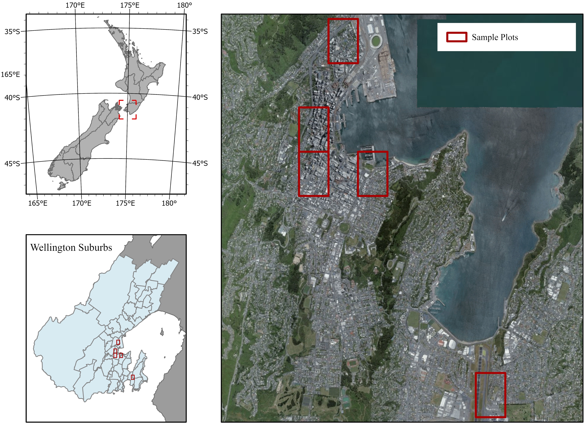
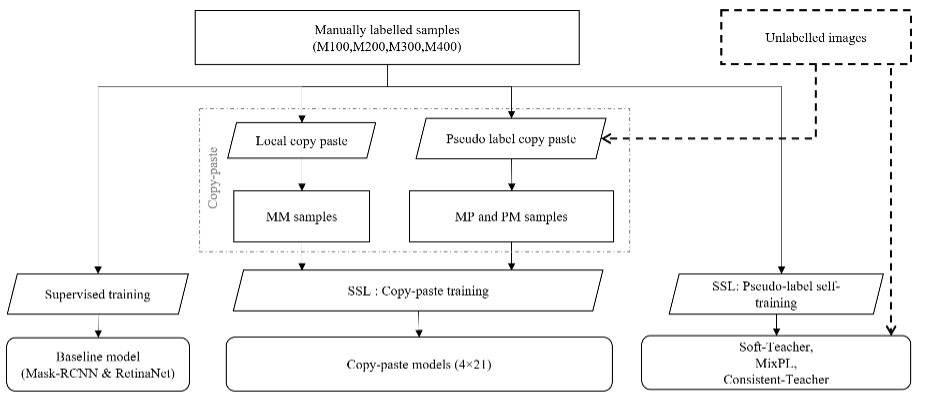
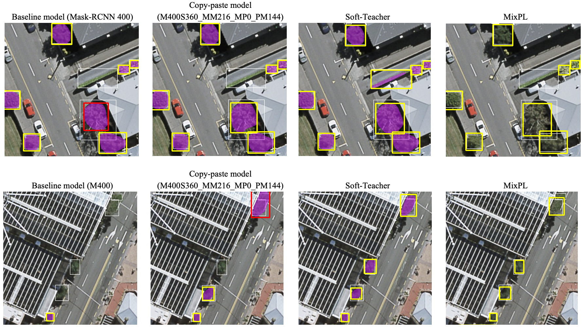

Improving Individual Tree Detection and Crown Delineation of Urban Trees Using Semi-supervised Deep Learning
This study investigates how semi-supervised deep learning can improve data efficiency for Individual Tree Detection and Crown Delineation (ITDCD) in urban forests using aerial RGB imagery.
1. Study Area and Data
The research was conducted in Wellington City, New Zealand, across five urban forest sites that varied in canopy structure and species composition. Aerial RGB imagery was used as the main dataset for model development and evaluation.

2. Methods
Three main training strategies were evaluated:
Supervised baseline – trained on manually labelled samples of varying sizes.
Copy-paste augmentation – a data-centric approach that creates synthetic crowns by pasting cropped trees into unlabelled images.
Pseudo-label self-training – a model-centric approach that uses predictions on unlabelled data as new training samples to iteratively improve performance.

3. Key Findings
Simply increasing labelled data did not guarantee higher accuracy — data informativeness (measured by entropy) was more important.
Copy-paste augmentation improved accuracy moderately when used with larger labelled datasets.
Pseudo-label self-training achieved the best performance, outperforming all supervised models and data-augmentation variants.

4. Results Summary
The pseudo-label self-training model achieved:
mAP0.5(bbox): 64.3%
mAP0.5(seg): 61.8%
F1-score: 61.4%
5. Conclusions
Pseudo-label self-training effectively improved model performance with limited labelled data. The study demonstrated that high-quality, informative samples contribute more to model improvement than simply increasing dataset size. This highlights the potential of semi-supervised learning to enhance urban forest mapping efficiency.